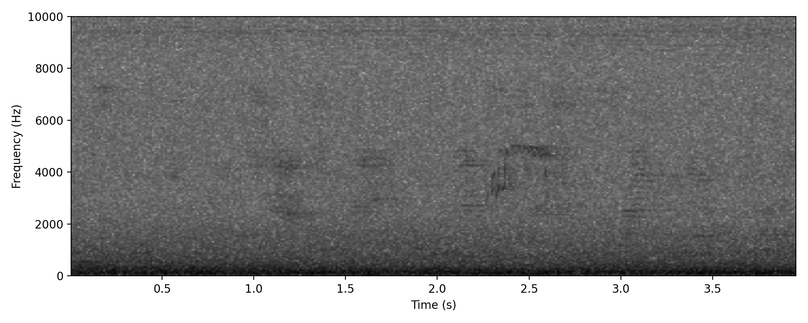

← Back to library
A sibilant preenk given a few seconds apart as the bird flies over Featured

here are library notes
A sibilant preenk 2
second set of library notes
A sibilant preenk 3
third set of library notes